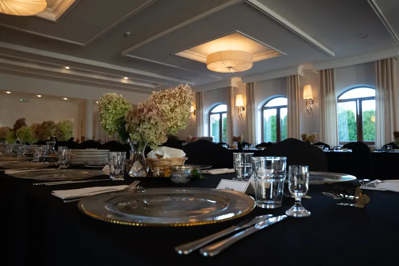
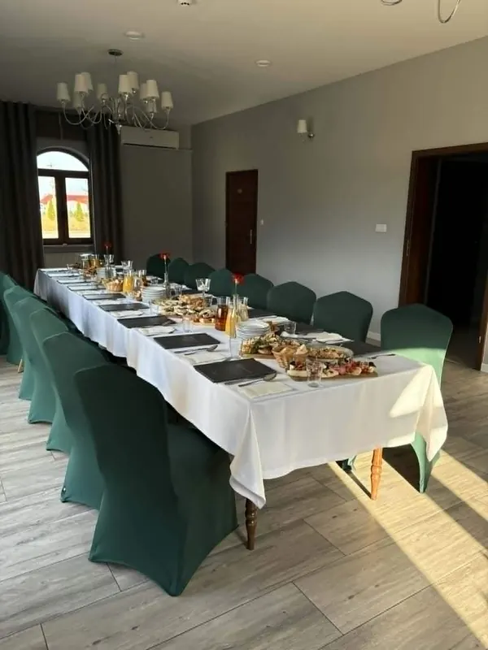
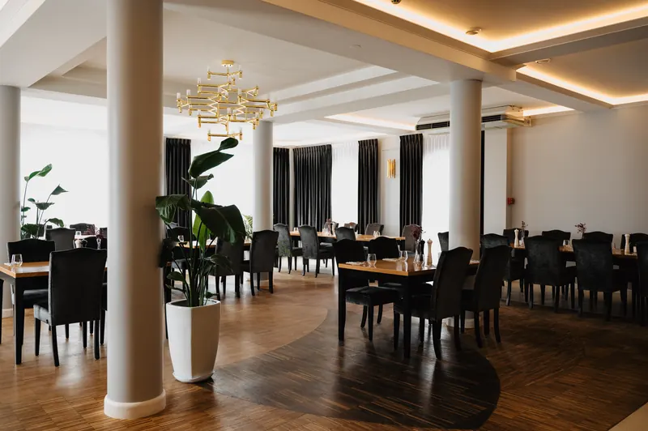
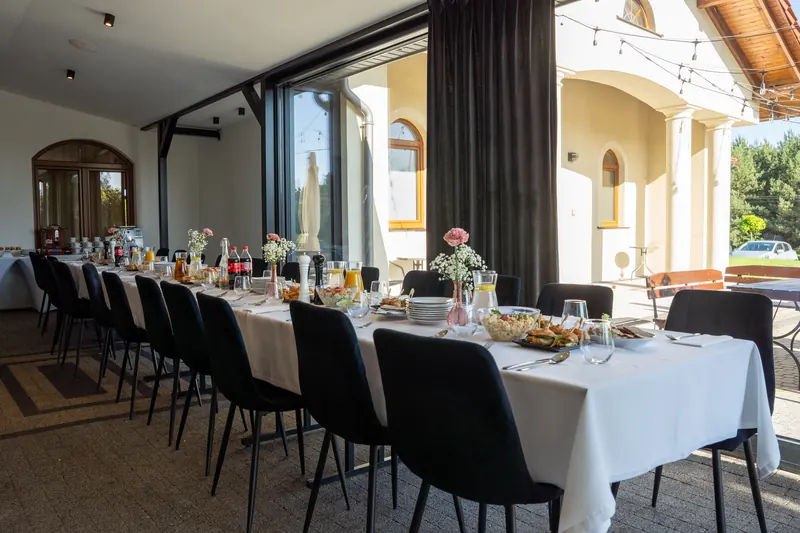

Konferencje i szkolenia
Każda z naszych sal jest w pełni klimatyzowana, ma dostęp do światła dziennego (z możliwością zaciemnienia) oraz nowoczesne zaplecze multimedialne. Dbamy o komfort uczestników: przy wszystkich salach przewidzieliśmy miejsce na bufet kawowy oraz szybki dostęp do węzła sanitarnego.

Sala Balowa
do 200 osób (w zależności od ustawienia)
Największa z naszych przestrzeni, łącząca stylowy, elegancki design z nowoczesną funkcjonalnością. Idealna na prestiżowe konferencje, kongresy oraz duże szkolenia.
- Możliwości aranżacji
- Dowolny układ stołów i krzeseł (teatralny, podkowa, szkolny, bankietowy).
- Przeznaczenie
- Duże szkolenia, konferencje, prezentacje produktowe, gale i eventy firmowe.
- Wyposażenie
- Profesjonalne nagłośnienie, rzutnik wysokiej rozdzielczości, wielkoformatowy ekran, mikrofony bezprzewodowe, flipcharty.

Sala Bankietowa
do 30 osób
Dla mniejszych spotkań, które wymagają prywatności, ciszy i prestiżowej oprawy. Idealna na kluczowe rozmowy biznesowe.
- Przeznaczenie
- Operatywki, narady zarządu, zebrania, kameralne szkolenia, zamknięte spotkania biznesowe.
- Wyposażenie
- Telewizor z łatwym podłączeniem laptopa, flipchart, klimatyzacja.

Sala Restauracyjna
do 50 osób, po indywidualnych ustaleniach
Komfortowa i jasna przestrzeń stworzona z myślą o wydarzeniach średniej wielkości, gdzie liczy się skupienie i profesjonalna atmosfera.
- Możliwości aranżacji
- Ustawienie konferencyjne, szkolne lub w podkowę (literę U).
- Przeznaczenie
- Warsztaty, szkolenia średniej wielkości, prezentacje multimedialne, spotkania biznesowe.
- Wyposażenie
- Wielkoformatowy telewizor Smart TV lub rzutnik z ekranem, flipchart, szybkie Wi-Fi.

Patio
do 35 osób, po indywidualnych ustaleniach
Jasna sala z dużymi przeszkleniami.
Technologia
Szybkie, bezprzewodowe Wi-Fi na terenie całego obiektu, nowoczesne ekrany i telewizory, rzutniki, pełne okablowanie.
Komfort
Klimatyzacja z indywidualnym sterowaniem w każdej sali, strefy na przerwy kawowe bezpośrednio przy salach.
Logistyka
Bliskość toalet, łatwa komunikacja między salami a bazą noclegową i restauracją.